Практичні курси · журнал «ДентАрт» 2016 №4
Пряма реставрація зубів на абатменті
DIRECT RESTORATION ON ABUTMENT
Системне відновлення зубів зі стертістю в нашій версії включає 4 клінічних етапи: діагностичний, відновлення анатомічної форми всіх верхніх зубів, відновлення анатомічної форми всіх нижніх зубів і контрольний.
Такий підхід до відновлення прикусу та оклюзії заснований на визнанні первинності анатомічної форми зубів і вторинності прикусу, утвореного зубами. Немає зубів — немає прикусу! Цей підхід заснований також на визнанні того, що втрата вертикального розміру прикусу відбувається тільки або головним чином через втрату зубних тканин. З цього випливає, що відновлення початкової анатомічної форми всіх зубів за збереженими орієнтирами має привести до відновлення початкового прикусу і, як наслідок, оптимізації/відновлення позиції суглобових головок нижньої щелепи у скронево-нижньощелепних суглобах.
Правильна анатомія коронок зубів — правильний прикус — правильний суглоб!
При відновленні вертикального розміру прикусу і оклюзійних співвідношень бічних зубів нижня щелепа переміщується назад, створюючи простір для реставрації нижніх передніх зубів, які замикають прикус. Перед остаточним уточненням оклюзії ми надаємо пацієнтам приблизно один місяць для адаптації до поверненого прикусу з розділенням зубів-антагоністів захисною капою на нижній зубний ряд, виготовленою з м'якого прозорого термопластику.
| Діагностика (панорама, суглоби, артикулятор, міографія) | 1 місяць захисна капа на нижній зубний ряд |
| Відновлення висоти верхніх іклів Відновлення висоти верхніх бічних зубів Відновлення висоти верхніх передніх зубів | 1 місяць захисна капа на нижній зубний ряд |
| Відновлення висоти нижніх бічних зубів Відновлення висоти нижніх іклів Відновлення висоти нижніх передніх зубів | 1 місяць нова захисна капа на нижній зубний ряд |
| Діагностика (панорама, суглоби, артикулятор, міографія) | Корекція, 1 рік захисна капа на нижній зубний ряд |
За будь-якого ступеня стертості зубів наші пацієнти, як і ми, стоматологи, є бруксистами! І якщо зміну постави після відновлення прикусу ми можемо завважити відразу, то нічне стискання зубів минає приблизно через рік... Тому кожному пацієнтові ми виготовляємо дві капи: денну і нічну.
Досягнута рівновага прикусу залишатиметься такою протягом усього терміну служби реставрацій, якщо всі зуби спереду і ззаду, праворуч і ліворуч будуть зношуватися одночасно і однаково...
Різні матеріали на жувальній поверхні мають різне стирання! Важливо не те, як швидко чи повільно стираються матеріали, це більшою мірою залежить від вираженості бруксизму, а те, щоб стертість була всюди однаковою для збереження збалансованості прикусу.
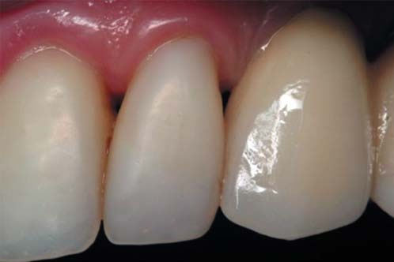
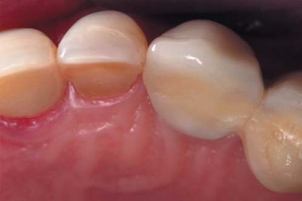
Руйнування латеральної поверхні зуба 22 на контакті з металокерамічною коронкою зуба 23, який є частиною мостоподібної конструкції з опорою на імплантати. Причиною, очевидно, є відсутність деформацій металокерамічної коронки і нерухомість усієї конструкції в зубному ряду при циклічному оклюзійному навантаженні через опори на імплантати.
Тому якщо на жувальній поверхні емаль, то повинна бути тільки емаль (дентин на жувальній поверхні є патологією і має бути закритий штучною емаллю в результаті лікарської допомоги), якщо на жувальній поверхні якийсь композит, то тільки цей композит, і якщо на жувальній поверхні кераміка, то тільки кераміка того самого типу...
Якщо всі зуби відновлені композитом з певним стиранням, а окремі зуби відновлені керамікою з певним нестиранням, то приблизно через 3 роки оклюзійні контакти починають домінувати на керамічній/их коронці/ах, призводячи в майбутньому до розбалансування прикусу в цілому.
Слід пам'ятати, що під оклюзійним навантаженням усі природні зуби деформуються і повертаються у початковий стан після зняття навантаження. Реставраційні матеріали повинні деформуватися разом із зубними тканинами такою ж мірою і не мати пластичної деформації. Від композиту можна цього добитися (з великою умовністю, бо зуб має анізотропну структуру, а всі композити ізотропні). Від кераміки можна цього очікувати тільки у вигляді ультратонких вінірів, але від кераміки на абатменті з опорою на імплантат домогтися таких деформацій неможливо, такі зуби «стоять, як вкопані», руйнуючи антагоністи і сусідні реставровані зуби!
Ось тому і виникла необхідність при системному відновленні оклюзії в прямій реставрації композитом спробувати відновити композитом і окремі зуби з опорою на імплантати...
Клінічний приклад відновлення зубів композитом з опорою на імплантатах
Пацієнт, 51 рік, після встановлення трьох одиночних імплантатів у зоні відсутніх зубів 14, 25 і 37 був направлений на консультацію з приводу скупченості всіх передніх зубів і потенційної реставрації цих зубів композитом у прямій техніці. При клінічному обстеженні було виявлено також тотальну стертість передніх і бічних зубів з розкриттям дентину і зниженням висоти коронок зубів, а також те, що численні реставрації потребують ревізії та заміни.
Лікувальний план передбачав системне відновлення анатомічної форми коронок зубів з відновленням вертикального розміру прикусу та оклюзії, паралельно з реконструкцією верхніх і нижніх передніх зубів. Щоб уникнути нерівномірного зношування з часом оклюзійної поверхні зубів, було запропоновано відновити композитом у прямій техніці і зуби з опорою на імплантати, на що було отримано згоду лікаря, який встановив імплантати. Перед відновленням оклюзії пацієнт повинен був користуватися ізолюючою капою на нижні зуби протягом 2 місяців.
Перший лікувальний етап, відновлення всіх верхніх зубів, тривав 3 дні: перший день — відновлення іклів, відновлення бічних зубів правої верхньої щелепи; другий день — відновлення бічних зубів лівої верхньої щелепи; третій день — реконструкція верхніх різців, корекція в оклюзії всіх зубів, шліфування та полірування.
Між відновленням верхніх і нижніх зубів протягом місяця пацієнт повинен був користуватися тією самою капою, що ізолювала верхні і нижні зуби одні від одних.
Другий лікувальний етап, відновлення всіх нижніх зубів, тривав також 3 дні: перший день — відновлення бічних зубів праворуч, відновлення молярів ліворуч; другий день — реконструкція іклів та реконструкція різців; третій день — відновлення двох верхніх премолярів і нижнього моляра на абатментах, фіксованих до імплантатів. Виготовлення нової ізолюючої капи на нижній зубний ряд.
Контрольний візит — перевірка оклюзійних співвідношень, корекція зуба 25 в оклюзії і відновлення горбика нижнього лівого ікла. Контрольний візит відбувся через рік.
Клінічна ситуація до системної реставрації зубів
У початковій ситуації у пацієнта виявляються ознаки дисгнатичного нейтрального прикусу, скупченість верхніх і нижніх передніх зубів: вестибулярний нахил з поворотом верхніх латеральних різців, поворот верхніх центральних різців, поворот з вестибулярним нахилом нижніх іклів, поворот нижніх центральних різців по осі. Зуб 11 в кольорі, як зазвичай буває після травми. Є виражена стертість з розкриттям дентину ріжучих країв верхніх центральних та нижніх центральних різців, а також верхніх іклів. Вертикальні тріщини емалі, глибокі пришийкові дефекти свідчать про функціональне перевантаження.
Середня лінія верхнього і нижнього зубних рядів співпадає як у звичному змиканні, так і в передній позиції оклюзії, змикання між верхніми і нижніми передніми зубами щільне. У правій і лівій позиціях оклюзії спостерігається множинний контакт між зубами, у лівій позиції немає контакту між іклами. У зоні відсутніх зубів 14, 25 і 37 встановлені імплантати і зафіксовані формувачі ясенного краю. На контактних поверхнях бічних зубів поруч з встановленими імплантатами є множинні майданчики стирання, пігментація в зоні контактних пунктів, реставрації класу II з крайовим забарвлюванням.
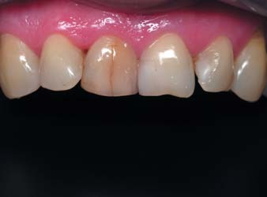
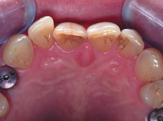
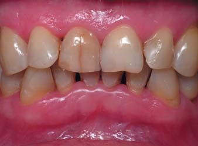
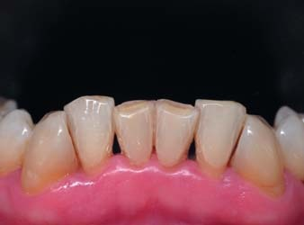
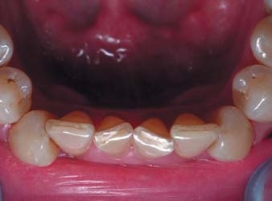
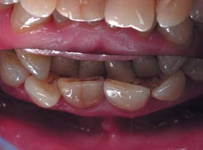
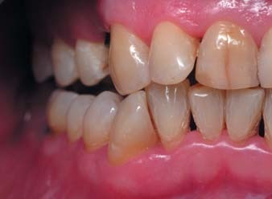
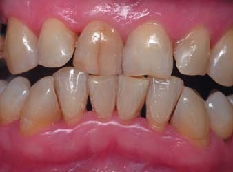
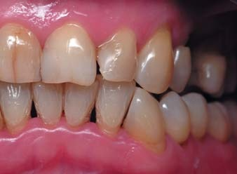
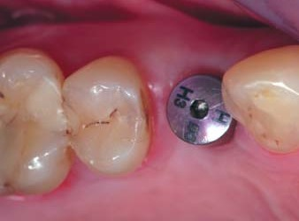
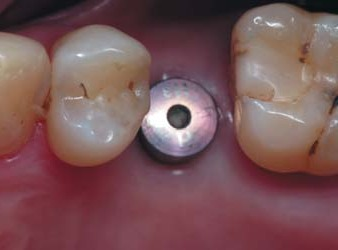
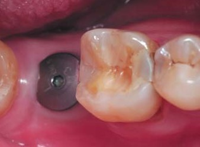
Відновлення зуба 14 на абатменті
Індивідуальний абатмент виготовлений з оксиду цирконію з шорсткою поверхнею для мікроретенції композиту і спроектований так, щоб основа повторювала поперечний переріз шийки зуба, а для композиту залишався максимально можливий вертикальний простір навколо шахти для гвинта.
Після ізоляції робочого поля рабердамом були проведені ревізія і відновлення примикаючих контактних поверхонь другого премоляра та ікла. Шахта для гвинта була закрита світлозатверджувальним прокладковим матеріалом з попереднім захистом головки гвинта від заповнення композитом.
Адгезивна підготовка поверхні абатмента зроблена за протоколом лагодження кераміки: гідрофториста кислота — 3 хв, змивання — 3 хв, 3 шари силану з висушуванням між шарами, однокомпонентна адгезивна система з експозицією і полімеризацією, текучий композит для захисту адгезивного шару. [4]
Орієнтуючись на другий премоляр, відновлено піднебінну стінку: дентин мікрогібридним композитом, основна емаль та емаль поверхнева двома відтінками наногібридного композиту. Вершину горбика встановлено трохи на меншій висоті у порівнянні з піднебінним горбиком другого премоляра.
Вертикально від основи абатмента відновлено шар дентину, а потім з розширенням на майбутні контакти і екватор коронки — основний шар емалі. Вершина горбика повинна бути трохи зміщена мезіально. Композитні матеріали використані ті самі, що і для піднебінної стінки коронки.
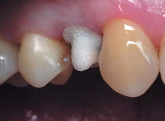
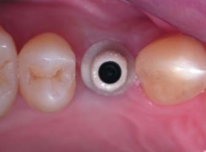
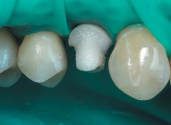
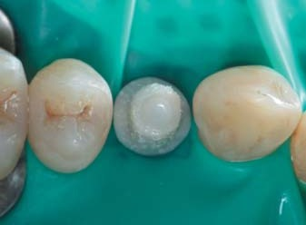
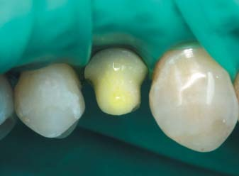
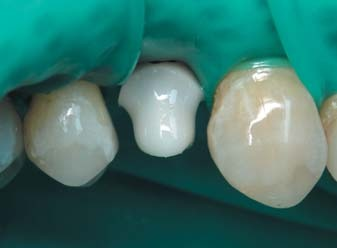
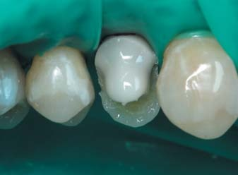
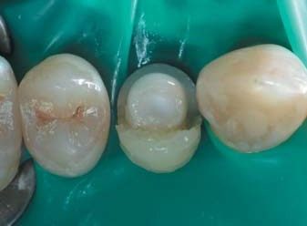
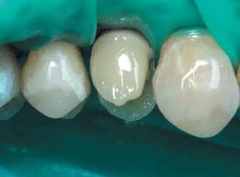
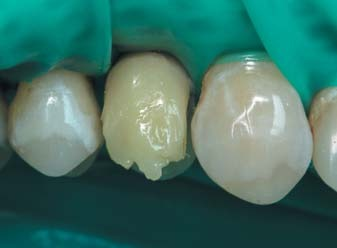
Прозорим відтінком композиту завершено відновлення вестибулярної стінки. Вершину горбика встановлено по лінії, що з'єднує вестибулярний горбик другого премоляра й ікла. Довільний дефект переведено в дефект MOD, створюючи опору для відновлення контактних поверхонь. [1]
За допомогою системи секційних матриць послідовно відновлені дистальна і мезіальна контактні поверхні з трьох композитів (текучий для вирівнювання, мікрогібридний для вклеювання і наногібридний для міцності) з одночасною полімеризацією всіх цих трьох матеріалів. [3]
Далі наногібрид: відтінком тіла змодельовано основу і площини горбиків, позиціоновано фісуру, а потім прозорим відтінком відновлено жувальну поверхню в техніці скульптурування. Характеризація фісур виявляє рельєф поверхні і створює ілюзію природності.
Вигляд верхніх бічних зубів після полірування. Внаслідок пересихання поверхні емалі добре видно, де поверхня реставрованих зубів покрита композитом, а де поверхня залишилася природною. Цим можна пояснити і відмінність реставрованих премолярів за кольором поверхні.
Вигляд верхніх бічних зубів через місяць. Колір поверхні реставрованих зубів відрізняється — колір штучного першого премоляра вочевидь жовтіший, насичений, що пов'язано, очевидно, з надмірною яскравістю цирконієвого абатмента, який топографічно перевершує межі предентину.
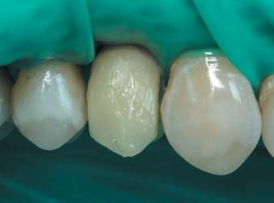
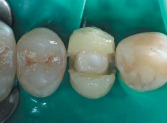
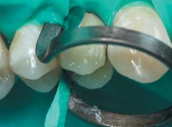
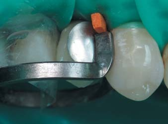
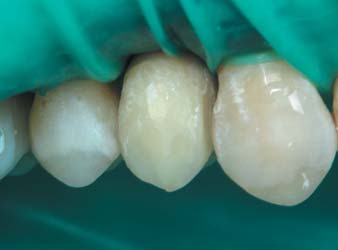
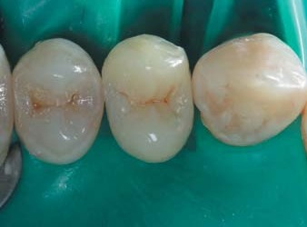
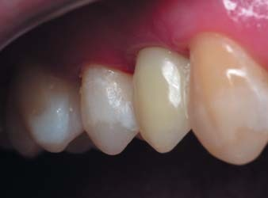
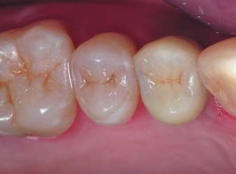
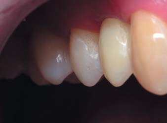
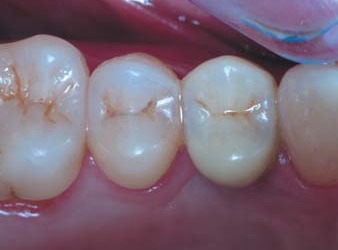
Відновлення зубів 47 і 25 на абатменті
Проведено адгезивну підготовку абатмента зуба 47 і в три шари (дентин мікрогібридним композитом, основна емаль та емаль поверхнева — наногібридним композитом) відновлено оральну і вестибулярну стінки коронки з позиціонуванням вершин усіх чотирьох горбиків, орієнтуючись на сусідні зуби (вершини направляючих язичних горбиків мають бути по краю коронки, вершини опорних щічних горбиків — посередині між екватором коронки і поздовжньою фісурою). Після відновлення дистальної і мезіальної контактних поверхонь рабердам зняли для перевірки горбиків і крайових валиків в оклюзії. Зроблено корекцію, знову накладено рабердам і пошарово відновлено основний дентин, основну емаль та емаль поверхневу з характеризацією фісур.
Коронка зуба 25 відновлена за таким самим алгоритмом, однак перевірка горбиків в оклюзії зі зняттям і повторним накладанням рабердаму не робилася з огляду на меншу функціональну значущість другого премоляра... І, як виявилося, це було помилкою! Дезорієнтувала дуже висока шийка абатмента, і жувальну поверхню зуба 25 довелося перебудувати заново під час контрольного візиту.
Рентгенівський контроль реставрованих зубів показав відсутність надлишків композиту за краями абатментів.
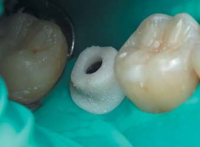
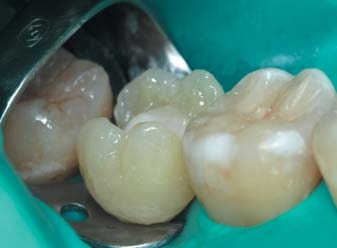
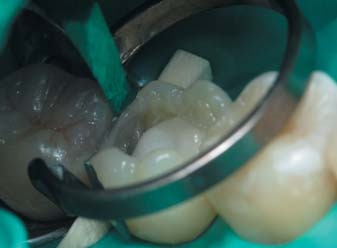
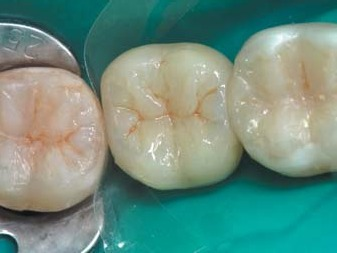
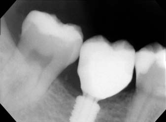
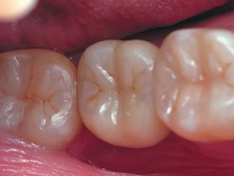
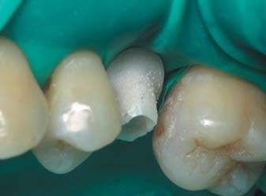
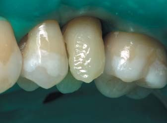
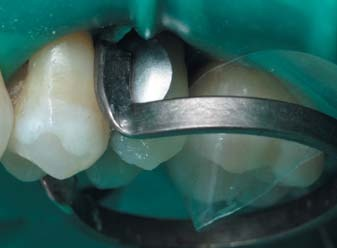
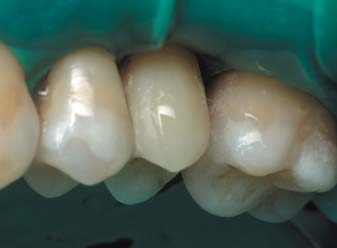
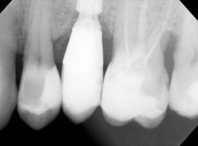
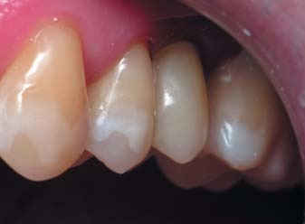
Клінічна ситуація після реставрації зубів
Після відновлення нижніх бічних зубів, включаючи зуб 47 на абатменті, і досягнення симетричності у змиканні бічних зубів формується остаточний вертикальний розмір прикусу, що є похідним від вертикальних розмірів бічних зубів-антагоністів. Далі реконструкцією іклів була досягнута іклова домінанта і на завершення системного відновлення прикусу проведена реконструкція нижніх різців з усуненням повороту коронок зубів 31 і 41. Довжину нижніх різців встановлено за стандартними анатомічними параметрами, і це демонструє коректне роз'єднання зубних рядів у передній, правій та лівій позиціях оклюзії.
Однак при оцінці змикання різців у дзеркалі видно, що оклюзійного контакту між верхніми і нижніми різцями у звичному співвідношенні немає. Очевидно, це пов'язано з реконструкцією верхніх зубів — нахилом центральних різців вестибулярно. Світлі плями на поверхні багатьох зубів показують межі відкритої емалі, посвітлілої внаслідок пересихання.
Жувальна поверхня зуба 25 для інтеграції його в оклюзії була доповнена пізніше під час контрольного етапу системного відновлення оклюзії, який відбувся через місяць після відновлення анатомічної форми всіх зубів нижнього зубного ряду.

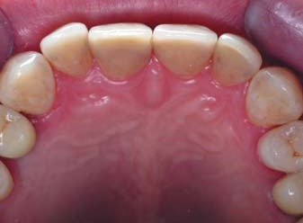
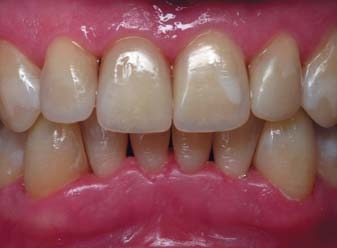
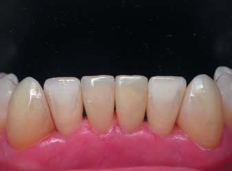
Клінічна ситуація через рік
Контрольний огляд через рік демонструє спроможність виконаного системного відновлення анатомічної форми всіх зубів з реконструкцією верхніх різців, нижніх різців та іклів. Скарг немає, функціональних порушень не виявлено. Для чищення реставрованих зубів було рекомендовано використовувати вранці і ввечері дві зубні пасти різної абразивності: уранці зуби потрібно чистити зубною пастою дуже низької абразивності (RDA<50) для полірування поверхні композиту, увечері — зубною пастою середньої абразивності (RDA=60-80) для ефективного очищення поверхні зубів від нальоту.
Блиск штучної і природної поверхонь реставрованих зубів свідчить про адекватну особисту гігієну порожнини рота. Ясенні краї навколо реставрованих зубів без змін. За рахунок адаптації жувальних поверхонь верхніх і нижніх зубів одна до одної зменшилася відстань між різцями у звичному змиканні. Однак між верхніми центральними різцями з'явився незначний вертикальний проміжок. Співвідношення зубних рядів у звичній, передній і бічних позиціях оклюзії відповідає функціональній нормі.
Коронки зубів, відновлених на абатментах з опорою на імплантати, протягом року після реставрації повністю зберегли свою форму.
Висновки
Системна реставрація композитом у прямій техніці з послідовним відновленням анатомічної форми всіх зубів дозволяє відновити прикус, втрачений через стертість зубів, оскільки анатомічна форма зубів є первинною, а прикус вторинним, похідним. Якщо всі зуби відновлені одним матеріалом (композитом або керамікою), це забезпечує збалансованість прикусу з роками. Однак у композиту та кераміки різне стирання, а тому й різна доля в порожнині рота... Якщо всі зуби в зубному ряду реставровані композитом, а окремі зуби керамікою, то через кілька років різна стертість матеріалів на жувальній поверхні призведе до розбалансування прикусу.
Немає проблеми в заміні одиночних керамічних коронок прямою реставрацією з композиту, незалежно від стану опорних зубних тканин, це досить надійні, перевірені конструкції за умови повноцінної ізоляції в порожнині рота у процесі їх побудови. Проблемою є наявність у відновлюваному зубному ряду одиночних керамічних коронок з опорою на імплантати, оскільки пряма техніка відновлення таких коронок композитом не передбачена... Але це можливо в принципі! Запропоноване нами пряме відновлення таких коронок композитом ґрунтується на послідовності і техніці прямої реставрації бічних зубів, воно перевірене п'ятирічним досвідом у нашій клініці, однак вимагає значного досвіду, знань, майстерності і доступне не всім стоматологам, так само як і системне відновлення зубів зі стертістю. Немає нічого неможливого!
Література
- Радлинский С. Реставрация боковых зубов: стратегия и принципы // ДентАрт. – 1999. – №4. – С.19-40.
- Радлинский С. Системное восстановление высоты всех зубов при повышенной стираемости // ДентАрт. – 2007. – №3. – С.38-48.
- Радлинский С. Реставрация контактных поверхностей в боковых зубах // ДентАрт. – 2011. – №1. – С.22-40.
- Della Bona A. Bonding to Ceramics: scientific evidences for clinical dentistry. – San Paulo: Artes Medicas, 2009. – P.94-96,121.